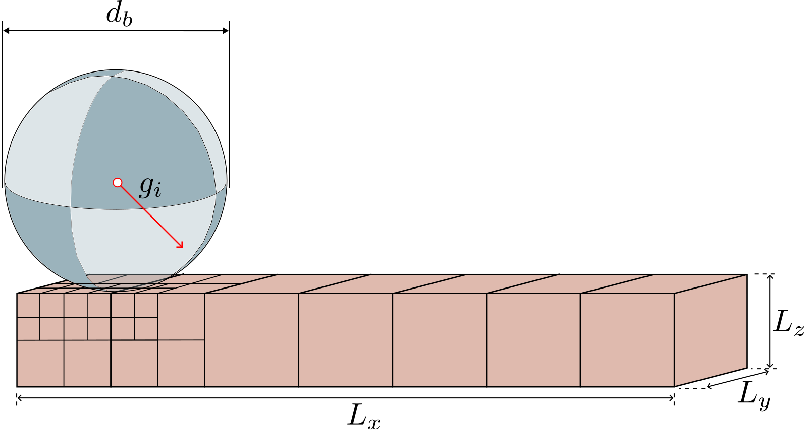
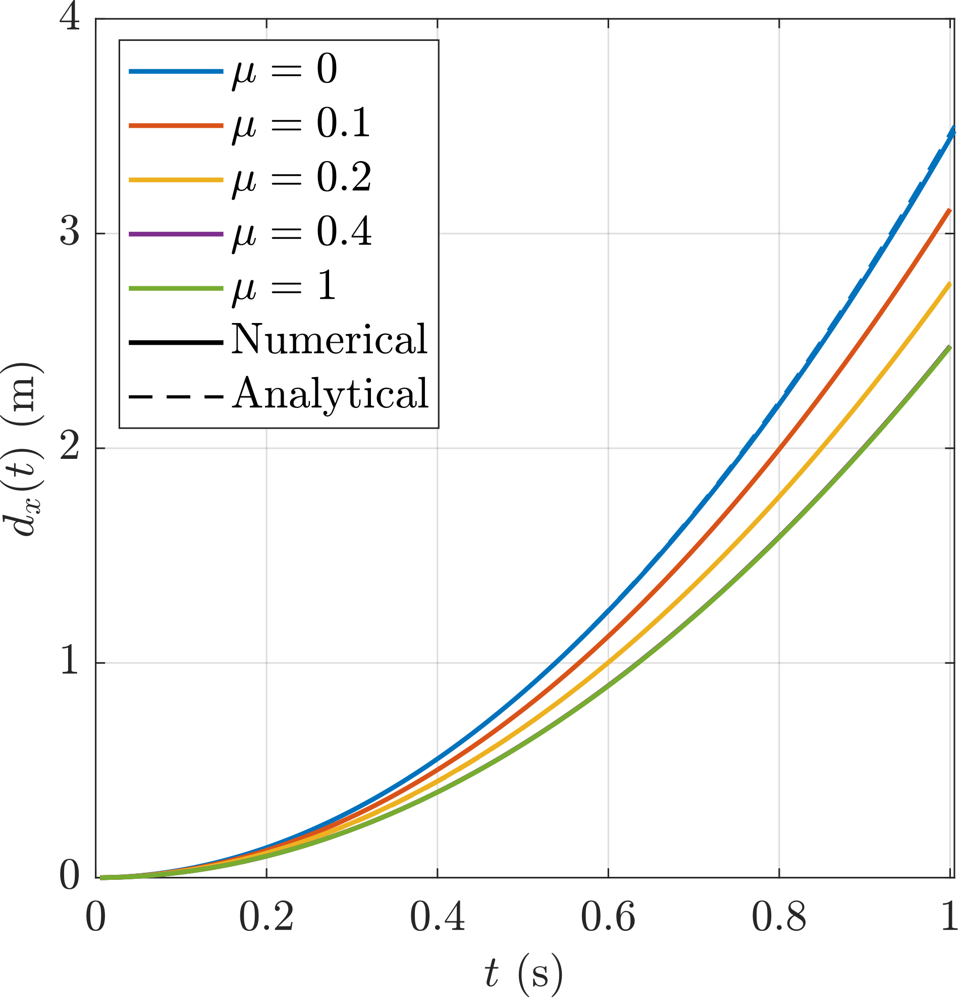

Tutorial 5: Rolling sphere¶
Introduction¶
This is the first dynamic tutorial in AMPSSIE. A rigid sphere rolls down an inclined slope under gravity, with the sphere's distance travelled compared against the analytical slip/stick solution for a sequence of friction coefficients.
The problem validates frictional contact, the dynamic time-integration scheme, and the hanging-node formulation simultaneously. As the sphere moves over the slope, the GIMPs around the contact patch are refined by the octree adaptivity; refined GIMPs are then carried with the contact region as the sphere travels.
This tutorial has four sections:
Problem description¶
You will define the geometry, mesh, boundary conditions, material, rigid body and solver in the input file. All the inputs to the simulation are defined using the input_data.json file format.
To keep the contact vertices aligned with the slope boundary as the sphere travels, the slope is kept horizontal and gravity is tilted to \(45^\circ\) instead (see Figure 1). The sphere then rolls along \(+x\) under the in-plane gravity component.

Figure reproduced from 1.
Mesh: Slope dimensions \(L_x = 50\) m and \(L_y = L_z = 1\) m. Adaptive octree refinement is driven by the rigid body position. The maximum element size away from the sphere is \(0.5\) m; at the contact point the smallest element size is \(dx_{\min} = 0.1\) m.
Initial GIMP distribution: \(2\times2\times2\) material points within each element, filling the slope volume.
Boundary conditions: Roller boundaries on all faces except the top, which is left as a free surface (homogeneous Neumann). Every node has its \(x\) and \(y\) degrees of freedom fixed - the slope must stay still while the sphere rolls.
Material: The slope is modelled as a very stiff Hencky elastic block (Young's modulus \(E = 10^9\) Pa, Poisson's ratio \(\nu = 0\)) rather than a true rigid body. The stiffness is high enough that the slope deforms negligibly, but treating it as a deformable continuum is what exercises the hanging-node + contact formulation - the point of the test.
Rigid body: The sphere has diameter \(d_p = 2.0\) m, mass \(m = 10^4\) kg and rotational inertia \(I = 4000\) kg\(\cdot\)m\(^2\). Its surface is discretised as 3120 triangles arranged on a latitude-longitude grid with the poles aligned to the rolling plane (so the finest triangles contact the GIMPs). The friction coefficient \(\mu\) is the parameter you sweep - try \(\mu \in \{0,\, 0.1,\, 0.2,\, 0.4,\, 1.0\}\) to cover both slipping (\(\tan\theta > 3.5\mu\)) and sticking regimes. The penalty parameters are
as in Tutorial 2.
Loading: A single dynamic stage. Gravity is applied as a tilted vector
equivalent to a \(45^\circ\) slope under a vertical gravity field.
Solver: Newton-Raphson, implicit dynamic. The sphere's velocity, angular velocity and rotation evolve through time under the resultant of gravity and contact.
The analytical solution to compare against is the distance the sphere has travelled along \(+x\) as a function of time:
with \(g = 9.81\) m/s\(^2\) and \(\theta_s = 45^\circ\).
Input setup¶
The input file is a single JSON object - a human-readable, editable text file. The complete file for this problem can be found here.
This problem has seven top-level sections, broken out below alongside the Problem description.
Defaults (a face being free, a DOF being unconstrained, etc.) are not included in the file; only non-default settings are specified. See the input_data.json file format for the full list of defaults.
input_data.jsonMesh data¶
dx refined is the smallest element size, applied to elements intersecting the sphere. dx coarse is the maximum element size far from the sphere. Refinement type is rigid body adaptive so the refined patch follows the sphere along the slope.
Initial GIMP distribution¶
Boundary conditions¶
Rollers on all lateral and bottom faces. All nodes have their \(x\) and \(y\) DOFs fixed so the slope does not translate.
Material¶
A single very-stiff Hencky elastic layer representing the slope.
Rigid body¶
The sphere geometry is loaded from an external mesh file; the kinematic parameters (mass, inertia, initial position) and the friction coefficient \(\mu\) are listed inline. Vary friction coefficient between runs to reproduce the slip/stick sweep.
Loading¶
A single dynamic stage with tilted gravity. The tilt encodes the \(45^\circ\) slope.
The two non-zero components are \(9.81 / \sqrt{2} \approx 6.9367\) m/s\(^2\) each.
Solver¶
Newton-Raphson, implicit dynamic.
Output data¶
Deploying and running the problem¶
Viewing the results¶
Below, the deformed slope and GIMP positions show how the refinement follows the sphere down the slope (left, Figure 2), and the simulated \(d_x(t)\) traces are overlaid on the analytical solution for each friction coefficient, exercising both slipping and sticking regimes (right, Figure 3).


Figures reproduced from 1.
The agreement is excellent across the full friction range and across the slip/stick boundary at \(\tan(45^\circ)/3.5 \approx 0.286\), validating the dynamic frictional contact formulation in the presence of hanging nodes.
-
Robert E. Bird, William M. Coombs, Charles E. Augarde, Giuliano Pretti, and Ted J. O'Hare. An implicit octree-based adaptive material point method. 2026. URL: https://arxiv.org/abs/2606.09275, arXiv:2606.09275. ↩↩